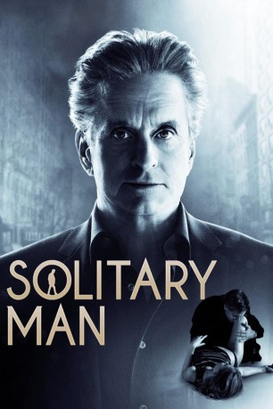

#4583 Solitary Man - Herzensbrecher a. D.
Alternativ: Solitary Man
 
 IMDB-Wertung: 6.4 / 10
IMDB-Wertung: 6.4 / 10  Metascore: 0
Metascore: 0 
Der New Yorker Autohändler Ben Kalmen hat es nicht leicht. Durch seine eigene Schuld hat ihn seine Ehefrau Nancy verlassen, seine einst erfolgreiche Autohauskette ist bankrott und das Altern bereitet ihm auch Sorgen. Seine Tochter ist genervt von Bens ständigen One-Night-Stands, mit denen der notorische Womanizer seine Lebenskrise zu bekämpfen versucht. Um sein berufliches Comeback voranzutreiben, beginnt er eine Affäre mit Jordan, der Tochter eines einflussreichen Unternehmers. Der sorgfältig geplante Neuanfang gerät allerdings ins Wanken, als Ben übers Wochenende Jordans attraktive Tochter Allyson zum Vorstellungsgespräch an seine alte Universität begleitet.
Jahr: 2009
Dauer: 89 Minuten
FSK: 12
Land: USA Studio: Anchor Bay FilmsTonspuren: DTS - ,
Untertitel: Deutsch,
Auflösung: 1080p (1920x816) Größe: 4382 MB
Genre: Komödie, Drama, Liebe
Regisseur: Brian Koppelman, David Levien
Drehbuch: Bob Fisher
Soundtrack:
Darsteller:
 Michael Douglas als Ben Kalmen
Michael Douglas als Ben Kalmen Susan Sarandon als Nancy Kalmen
Susan Sarandon als Nancy Kalmen Danny DeVito als Jimmy Merino
Danny DeVito als Jimmy Merino Mary-Louise Parker als Jordon Karsch
Mary-Louise Parker als Jordon Karsch Jenna Fischer als Susan Porter
Jenna Fischer als Susan Porter Imogen Poots als Allyson Karsch
Imogen Poots als Allyson Karsch Jesse Eisenberg als Daniel Cheston
Jesse Eisenberg als Daniel Cheston Richard Schiff als Steve Heller
Richard Schiff als Steve Heller- Jake Siciliano als Scotty
 David Costabile als Gary Porter
David Costabile als Gary Porter Ben Shenkman als Peter Hartofilias
Ben Shenkman als Peter Hartofilias- Anastasia Griffith als Carol Salomonde
- Alex Kaluzhsky als Ted Loof
 Simona Williams als Nurse
Simona Williams als Nurse James Colby als Sgt. John Haverford
James Colby als Sgt. John Haverford Arthur J. Nascarella als Nascarella
Arthur J. Nascarella als Nascarella Bruce Altman als Dr. Steinberg
Bruce Altman als Dr. Steinberg Adam Pally als Irate Student
Adam Pally als Irate Student Lenny Venito als Todd The Building Manager
Lenny Venito als Todd The Building Manager- Greg McFadden als Maitre D'
 Ricky Garcia als Waiter
Ricky Garcia als Waiter Douglas McGrath als Dean Edward Gitleson
Douglas McGrath als Dean Edward Gitleson Gillian Jacobs als Tall Girl
Gillian Jacobs als Tall Girl- Arizona Muse als Kelly
 James Thomas Bligh als Bartender Bob , uncredited
James Thomas Bligh als Bartender Bob , uncredited Jennifer Butler als Susan's Friend , uncredited
Jennifer Butler als Susan's Friend , uncredited- Jolynn Carpenter als Hipster Model , uncredited
- Lexie Helgerson als College girl , uncredited
- Rebecca Merle als College Party Girl , uncredited
- Dana Power als Young Woman , uncredited
- Sean Patrick Reilly als Shadow , uncredited
- Lana Taylor als Hostess , uncredited
 Olivia Thirlby als Maureen , uncredited
Olivia Thirlby als Maureen , uncredited- Nick H. Toomey als Bill Rallye
- Katherine Owens als Allyson's Attractive Friend
- Bianca Giancoli als Jogger , uncredited
- Adam Goodnoff-Cernese als Taxi Cab Driver , uncredited
- Anna Kuchma als Student , uncredited
- Anthony Michael Pallino als College Kid , uncredited
- Anjelia Pelay als Cheerleader , uncredited
- Jamie Lee Petronis als Make Out Guy , uncredited
- Peter Riga als Man at Airport Ticket Counter , uncredited
Datei: X:\2009(N-Z)\Solitary Man - Herzensbrecher a. D. (2009, FSK12, 1920x816).mkv seit 18.10.2016
Festplatte: HD 2009(G-Z)-2010(A-F)
 Es gibt insgesamt 99 Filme in der Gruppe '2009(N-Z)'
Es gibt insgesamt 99 Filme in der Gruppe '2009(N-Z)'